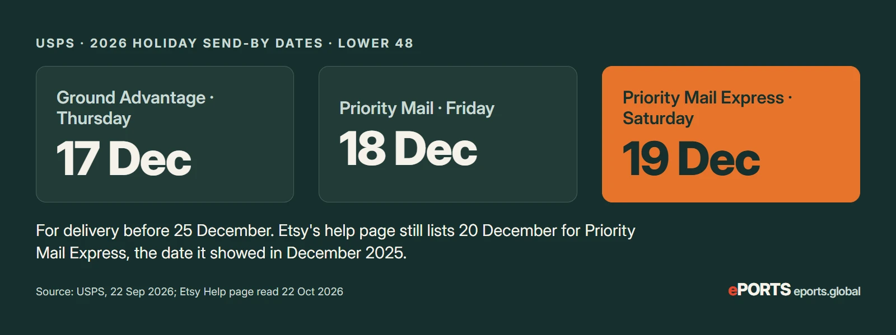

Marketplaces desk · Etsy
Etsy's holiday shipping page still shows last year's dates. Here are this year's
Planning your Christmas cut-off from Etsy's help page? Its dates and surcharges still matched last December's when we checked, and two of them will cost you this year. Here's the real 2026 calendar, and how to find your own last order day.
The short version: Etsy's help page for holiday shipping cut-offs still showed last December's dates when we checked it on October 22. For Priority Mail Express, that puts you a day late: Etsy says December 20, USPS says December 19. The page also understates the holiday postage rise. Below are this year's dates from the carriers themselves, and how to work out the last day a buyer can order from you.
It's the time of year when Etsy sellers start counting backwards from Christmas. Plenty of them will start where Etsy points them: a help page called "Understanding Shipping Carrier Surcharges & Cutoff Dates for the Holidays".
We read it on October 22 and compared it with a copy the Internet Archive saved on December 14, 2025. Every US date and surcharge note was the same, word for word. Christmas is still on the 25th. Several of the other numbers have moved.
Who can ignore this: shops that only sell digital downloads, and anyone who's already set their holiday cut-off from the carriers' own pages.
Two of last year's numbers will cost you
The Express date. Etsy's page says Priority Mail Express can go as late as December 20. This year USPS says December 19. If your buyer paid for Express so a gift arrives in time, the 20th is one day beyond USPS's recommended send-by date.
The postage rise. Etsy's page says Ground Advantage goes up "$.30-$.35" for the holidays. The real rise is bigger, and it has already started: USPS's holiday prices began on October 4 and run until January 17.
At USPS's commercial rates (its business prices for postage), a small parcel up to 3 lb now costs 40 cents more to nearby zones and 55 cents more to distant ones. Check what your own label service quotes.
That gap sounds small until you multiply it by a December's orders. And Etsy takes its 6.5% transaction fee on what buyers pay for shipping too (Etsy fees), so postage you don't pass on comes straight out of your margin.
The other differences mostly run the safe way. For UPS 3 Day Select and FedEx Express Saver, Etsy's page says December 19. Both carriers now say December 21, so Etsy's dates just cost you two selling days. Etsy's page says it will keep updating the list, so it may well change. Until it does, use the carriers' own dates.
This year's dates, from the carriers
USPS aims for delivery before Christmas Day. UPS and FedEx publish dates for delivery by Thursday, December 24. These are the dates to plan around, within the lower 48 states:
| Service | Send by |
|---|---|
| USPS Ground Advantage, First-Class Mail | Thu, Dec 17 |
| USPS Priority Mail | Fri, Dec 18 |
| USPS Priority Mail Express | Sat, Dec 19 |
| UPS 3 Day Select / FedEx Express Saver | Mon, Dec 21 |
| UPS 2nd Day Air / FedEx 2Day | Tue, Dec 22 |
| UPS Next Day Air / FedEx Overnight | Wed, Dec 23 |
| UPS Ground / FedEx Ground | Depends on the route: Dec 17 for a 5-day FedEx route, later for shorter ones |
Sources: USPS, UPS and FedEx. All three say their dates can change.

Shipping to Alaska or Hawaii? Priority and Express use the same dates. Ground Advantage has no date at all: USPS says to allow 10 days or more and to look up your exact ZIP codes. You'll see "December 16" quoted in some news reports. We couldn't find it on either USPS page.
Your real deadline is earlier than any of these
Here's the part most holiday guides skip. The carrier's date is when the parcel has to leave. The date that matters to your shop is the last day a buyer can order.
Etsy works out a buyer's delivery estimate as your processing time plus the carrier's transit time (Etsy Help). So count back from the carrier's date by your processing time. If your listings say 3 to 5 working days, count back 5. The table assumes you process orders Monday to Friday; if your shop also works weekends, your dates come a little later.
| Your processing time | Last order day, Ground Advantage | Last order day, Priority Mail |
|---|---|---|
| 1 working day | Wed, Dec 16 | Thu, Dec 17 |
| 2 working days | Tue, Dec 15 | Wed, Dec 16 |
| 3 working days | Mon, Dec 14 | Tue, Dec 15 |
| 4 working days | Fri, Dec 11 | Mon, Dec 14 |
| 5 working days | Thu, Dec 10 | Fri, Dec 11 |
So a shop promising 5 working days by Ground Advantage should stop promising Christmas on December 10, a full week before the date on everyone's lips. These are planning dates, not a guarantee: parcels do run late in December, so leave a day spare.
Getting this right matters beyond Christmas. Etsy expects at least 80% of your orders to ship within the processing time you set, and shops that fall short can lose search visibility (Etsy Help). Choosing a processing time you can hit in your busiest week, as well as the quiet ones, is one of the first set-up decisions Etsy Basics walks you through.
What to do this week
- Write down your last order day from the table, using your longest processing time.
- Tell buyers. Put it in your shop announcement and an order-by line in your listings.
- Check your shipping price still covers the label. Pull one holiday postage quote for a typical order, then put it, and what you charge for shipping, into our free fee calculator for Etsy sellers. It shows what's left after postage and every Etsy fee.
- Shipping to Alaska or Hawaii by Ground Advantage? Look up the ZIP codes on USPS's delivery-time tool now.
We'll check Etsy's page again before December and update this story if it changes. Earlier from the desk: Etsy is quietly paying part of some buyers' shipping, and what it means for your fees.
What we checked: the USPS, UPS and FedEx holiday pages and price lists, Etsy's help pages, and the Internet Archive's copy of Etsy's page, all read on October 22, 2026. Every source is listed below.
Sources, checked 22 Oct 2026
- USPS, 'USPS recommends 2026 holiday mailing and shipping dates', 22 Sep 2026, read 22 Oct 2026. about.usps.com
- USPS holiday shipping dates page, read 22 Oct 2026. usps.com
- USPS, temporary price change for the 2026 holiday shipping season, 25 Aug 2026, read 22 Oct 2026. about.usps.com
- USPS Notice 123 price list, effective 4 Oct 2026, read 22 Oct 2026. pe.usps.com
- UPS 2026 Year-End Holiday Schedule (PDF, linked from UPS's holiday page), read 22 Oct 2026. ups.com
- UPS Demand Surcharges, 26 Aug 2026 update, read 22 Oct 2026. ups.com
- FedEx, 2026 shipping deadlines for holiday packages (PDF), read 22 Oct 2026. fedex.com
- FedEx Demand surcharges, updated 4 Sep 2026, read 22 Oct 2026. fedex.com
- Etsy Help, 'Understanding Shipping Carrier Surcharges & Cutoff Dates for the Holidays', read 22 Oct 2026 and again 28 Oct 2026 (US dates and surcharges unchanged). help.etsy.com
- The same Etsy page as archived by the Internet Archive on 14 Dec 2025. web.archive.org
- Etsy Fees & Payments Policy (updated 5 Oct 2026), transaction fee of 6.5% on item price plus shipping, read 12 Oct 2026. etsy.com
- Etsy Help, customer service standards (on-time shipping), read 22 Oct 2026. help.etsy.com
- Etsy Help, 'What is an Estimated Delivery Date?', read 22 Oct 2026. help.etsy.com
Applies to: US sellers shipping within the US for Christmas 2026.
How this was made: researched from the sources below, checked claim by claim and edited by Drew Halden. Image 1 is an illustration. Editorial responsibility: ePORTS LLC. Nothing here is legal, tax or financial advice. Spotted an error? Tell us and we'll correct it on this page.